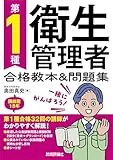
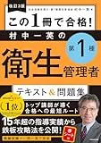

第一種衛生管理者のおすすめ参考書・テキスト3選【2026年度版・独学】
2026年度版のテキスト&問題集3冊を、章立て・解説の厚み・演習との相性で比較します。本番は100問・180分（13:30〜16:30）・5科目各20問・総合60％+各科目40％足切りです。執筆時点（2026-06-12）のAmazon税込参考は各1,870円。購入前に各販売ページで最新の価格・在庫・版を確認してください。
この記事の要点
本記事を読むと、3冊の向き不向きが分かり、たとえば「6/14開始→スッキリで8月末まで第1周→9/7に100問得点記録→弱点科目だけ問題集追加」まで具体例付きで1冊選びを設計できます。
- 「2026年度版 スッキリわかる 第1種衛生管理者 テキスト&問題集」
- 「第1種衛生管理者 合格教本&問題集」
- 「改訂3版 この1冊で合格! 村中一英の第1種衛生管理者 テキスト&問題集」
- 要項5科目と目次の一致
- 解説量と演習のバランス
この記事の信頼性について
| 執筆 | 一衛マスター編集部（資格学習サイトの編集チーム） |
|---|---|
| 確認 | 公式情報確認担当（公開前に一次情報との照合を行う担当者） |
| 事実確認日 | 2026-06-12 |
| 主な参照元 |
16月開始：5科目足切り前提で1冊を決める3点
テキスト選びは、試験協会の要項で出題範囲を確認したあと、次の3点から始めます。たとえば6/14（土）開始で週8時間なら、平日60分×5日＋日曜3時間の配分が続きやすいです。
| 観点 | 確認内容 |
|---|---|
| 出題範囲 | 要項の5科目（法令有害・法令以外・衛生有害・衛生以外・労働生理）と目次が対応するか |
| 解説量 | 初学者は図解多め、実務経験者は条文整理の厚みを優先 |
| 演習接続 | 章末演習→一衛マスター616問→9月の100問通しまでつながるか |
3冊同時に開くより、1冊を80％まで読んでから次を検討する方が、5科目の足切り対策では効率がよいです。指定テキストの版は要項PDFで必ず照合してください。
おすすめテキスト3選（比較）
価格・在庫・版情報は執筆時点（2026-06-12）のAmazon税込参考です。購入前に必ず販売ページでご確認ください。
| 順位 | 商品名 | 価格（税込参考） | ページ数 | 向いている人 |
|---|---|---|---|---|
| 1 | 2026年度版 スッキリわかる 第1種衛生管理者 テキスト&問題集 | ¥1,870 | 512 | 初学者で図解と演習を1冊にまとめたい人 |
| 2 | 第1種衛生管理者 合格教本&問題集 | ¥1,870 | 560 | 解説の厚みと演習量のバランスを重視する人 |
| 3 | 改訂3版 この1冊で合格! 村中一英の第1種衛生管理者 テキスト&問題集 | ¥1,870 | 480 | 著者の解説トーンで暗記→演習を進めたい人 |

2026年度版 スッキリわかる 第1種衛生管理者 テキスト&問題集
- イラスト中心で5分野の全体像をつかみやすい
- 章末演習でテキストと問題の往復がしやすい
- TACブランドで独学の定番として選ばれやすい

第1種衛生管理者 合格教本&問題集
- 教本パートで論点を丁寧に整理
- 問題集パートで演習量を確保しやすい
- 技術評論社シリーズで他資格教材との相性がよい

改訂3版 この1冊で合格! 村中一英の第1種衛生管理者 テキスト&問題集
- 村中一英氏の語り口で条文・数値を整理しやすい
- テキストと問題がセットで復習サイクルを組み立てやすい
- 改訂版で最新の出題傾向を反映
23冊比較表の見方（解説量・演習・ページ数）
上の比較表は、価格だけでなく「誰向きか」とページ配分の違いを見るためのものです。購入判断は次の順がおすすめです。
1. for_who（向いている人）を自分の状況と照合する
2. ページ数と5科目の章ボリューム感を目次で確認する
3. 週8時間で10月末までに第1周できるかをざっくり見積もる
たとえば労働生理だけ演習正答率が低い人は、図解で全体像をつかめるスッキリわかるを先に試し、法令条文の細部を厚く読みたい人は合格教本を候補にします。表をノートに転記したら、テキスト1章読了→演習10問で理解を確認し、誤答は用語解説と公式テキスト該当章で読み直してください。
31位：スッキリわかる（図解で5科目の地図を作る）
「2026年度版 スッキリわかる 第1種衛生管理者 テキスト&問題集」（TAC出版・512ページ）は、イラストと図表で5科目の全体像をつかみたい初学者向けです。
- 章末演習があるため
- テキストを読んだ直後に小さな確認問題へ進みやすく
- 「読んだつもり」を演習で検証するサイクルが作りやすいのが強み
向いている人：衛生管理未経験で、法令と労働生理の用語が初めての人。週8時間で6〜8月に第1周し、9月から100問通しに移行する計画と相性がよいです。
注意点：解説はコンパクトなので、条文の細部まで厚く読みたい場合は合格教本の方が向くことがあります。演習量は616問演習バンクや問題集記事と併用すると足切り対策が安定します。
42位：合格教本&問題集（解説の厚み派）
「第1種衛生管理者 合格教本&問題集」（技術評論社・2026年度版・560ページ）は、教本パートの解説が厚く、法令・労働生理の論点を文章で整理したい人向けです。問題集パートも同冊に入っているため、テキスト完走後にそのまま演習量を確保しやすい構成です。
- 向いている人：関連法令や労働生理で「なぜその数値か」まで理解したい人
- またはスッキリで全体像を掴んだあと
- 第2周の深掘り用に1冊追加したい人
スッキリとの使い分け：初回インプットはスッキリ、40％未満が続く科目の解説読み込みは合格教本、という2段構えも現実的です。同時に2冊を並行して開かず、週ごとに主役を1冊に絞ると迷いが減ります。
53位：村中一英テキスト&問題集（語り口で暗記→演習）
「改訂3版 この1冊で合格! 村中一英の第1種衛生管理者 テキスト&問題集」（KADOKAWA・480ページ）は、著者の語り口で条文・数値・主体を整理し、暗記→演習のリズムで進めたい人向けです。
- 改訂3版で出題傾向の更新が反映されており
- テキストと問題が同じトーンで続くため
- 復習サイクルを1冊の中で完結させやすいのが特徴
向いている人：講義調の説明で記憶定着しやすい人、再受験者で弱点科目をピンポイントに戻したい人。初学者が初手で選ぶ場合は、目次の5科目配分を書店で1章試読してから判断すると失敗が少ないです。
独学との併用：一衛マスターの616問で科目別正答率を記録し、40％未満科目の章を村中テキストで読み直す→1週間後に同分野20問、の順が定番です。
6よくある質問
テキストは1冊だけで足りますか？
スッキリと合格教本、どちらがよいですか？
価格・在庫はどこで確認しますか？
記事の基本情報
| ジャンル | 独学対策 |
|---|---|
| タグ | 独学 / 教材 / 学習計画 |
公式情報の確認
公式情報の確認：第一種衛生管理者試験の最新情報は、安全衛生技術試験協会（公式）などの公式情報を必ず確認してください。本人に割り当てられた試験会場は受験票の表記が正本です。